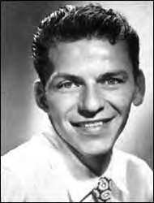
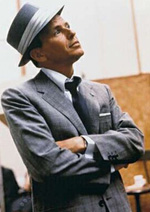
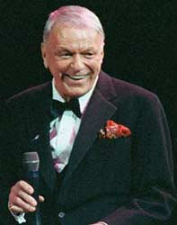

|

Frank Sinatra1915-1998
Singer,
film actor; born Francis Albert Sinatra, in Hoboken, New Jersey, on December 12,
1915, the only child of Dolly and Anthony Martin Sinatra.
Sinatra is considered by many to be the greatest entertainer of the twentieth
century. His recordings came to epitomize American popular singing at its finest,
with a style that maintained fidelity to a song's lyric and mood while imbuing
it with subtle elements of jazz beat and phrasing.
As a teenager, Sinatra worked unloading trucks for the Jersey Observer newspaper.
He became a copy boy with an aspiration to be a journalist, but when told by the
editor that copy boys "don't know enough to be reporters," Sinatra enrolled in
secretarial school, studying English, typing, and shorthand. He was eventually
promoted to cub sports reporter by the newspaper's editor.
In his spare time, Sinatra appeared on Major Bowes Amateur Hour, a popular
radio talent show. A self-taught singer, he was matched with three other aspirants
to sing "Shine." After the program, the quartet was sent out on tour by Bowes
as the "Hoboken Four." His first professional contract was for $25 per week as
a singer, head waiter, master of ceremonies, and a comedian at The Rustic Cabin,
a country roadhouse in Englewood Cliffs, New Jersey, in 1938. It was here in 1939
that Sinatra was discovered by Harry James, who signed him to sing for his new
swing band.
After touring with James in 1939, Sinatra rose to prominence as lead singer
with Tommy Dorsey's orchestra (1940-42), with whom he recorded more than ninety
songs. In 1943 he began working solo and served as emcee on the popular radio
program The Lucky Strike Hit Parade. Sinatra soon became a teen idol, with hysterical
"bobby-soxer" fans rioting outside his performance at New York's Paramount Theater
on Columbus Day in 1944. He recorded numerous hits for Columbia Records between
1943 and 1952, but moved to Capitol Records in 1953. In 1960 he co-founded Reprise
Records, where he recorded exclusively after 1963. 
Sinatra married his childhood sweetheart Nancy Barbato, in February, 1939.
They had three children: Nancy Sandra (1940), Franklin Wayne Emmanuel (Frank Jr.)
(1944), and Christina (Tina) (1948).
Sinatra experienced a career crisis in the late 1940s, which coincided with
the beginning of a tempestuous romance to actress Ava Gardner. 1949 was arguably
the worst year of Sinatra's career. He was fired from his radio show, and six
months later his New York concerts flopped. He and his wife were divorcing, and
his affair with Ava Gardner had become an open scandal. Columbia Records wanted
him out. In 1950, he was released from his MGM film contract, and his own agent,
MCA, dropped him. Sinatra seemed to have become a has-been at age 34. Sinatra
and Gardner married in 1951, but separated a few years later and divorced in 1957.
Things got worse when Sinatra lost his voice due to a vocal cord hemmorhage,
and he was rumored to have attempted suicide. Fortunately his voice problems were
temporary, and he helped pick himself back up by resuming his recording career,
and making an important re-entry into films. Sinatra landed the role of Maggio
in From Here to Eternity (1953), which earned him an Academy Award as Best Supporting
Actor. Considered a natural actor, Sinatra turned in top-notch performances in
many more films, most notably The Man With the Golden Arm (1955), The Manchurian
Candidate (1962) and The Detective (1968).
Sinatra's work brought him into the Hollywood
community in the late 1940s, where he became a member of the "Rat Pack," a group
of up-and-coming entertainers that included Sinatra, Sammy Davis Jr., Dean Martin,
Joey Bishop and Peter Lawford. The group performed together in Las Vegas in the
1950s and co-starred in several movies, including Ocean's Eleven (1960), Sergeants
Three (1962) and Robin and the Seven Hoods (1964). The Rat Pack also staged concerts
to raise money for John F. Kennedy's bid for the presidency in 1960.
In 1966, Sinatra married the diminutive actress Mia Farrow, when he was 51
and she was 21. The couple divorced a little over a year later, in 1967. He married
Barbara Marx, the former wife of Zeppo Marx, in 1976.
Sinatra announced his retirement
in 1971 but returned for various concert tours and recordings during the next
two decades, although his famous voice had begun to waver. His 1980 recording
of "New York, New York" made him the only singer in history to have hit records
in five consecutive decades. In 1988-89, Sinatra teamed up with his old Rat Pack
cohorts, Sammy Davis, Jr. and Dean Martin for a multi-city tour, and he last performed
in concert in 1994 at age 78. Sinatra died of a heart attack at age 82 on May
14, 1998. |